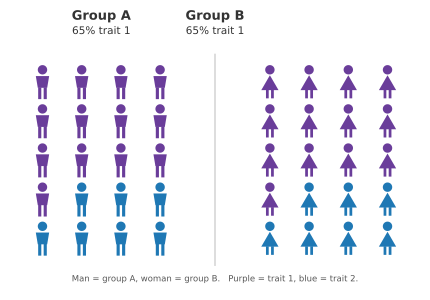
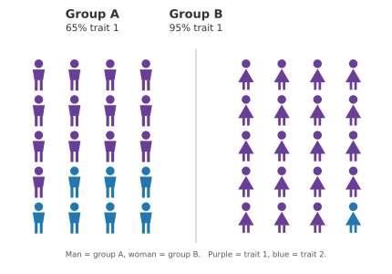
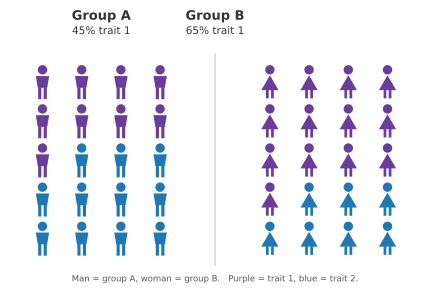
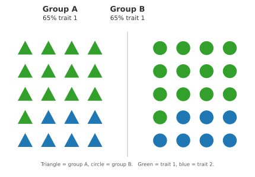
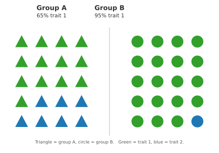
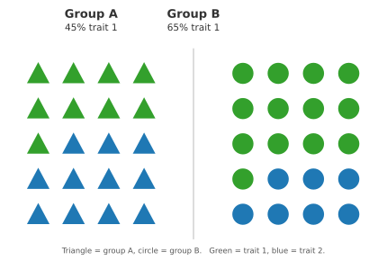
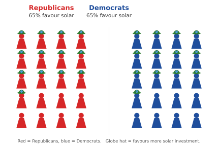
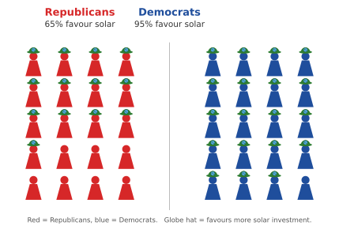
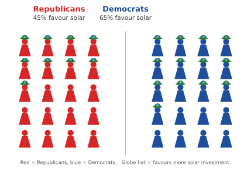

Study 1
Abstract designs
Two abstract framings of the same treatment frequencies, which the table below defines. Visual inspiration credited to Bordalo et al. (2016).
Treatments
Share holding trait 1 in each group.
| Treatment | Group A (π1A) | Group B (π1B) | R(1,A) |
|---|---|---|---|
| Neutral | 0.65 | 0.65 | 1.00 |
| Majority | 0.65 | 0.95 | 0.68 |
| Minority | 0.45 | 0.65 | 0.69 |
Men / Women
Abstract
Neutral

Majority

Minority

Triangle / Circle
Abstract
Neutral

Majority

Minority

Study 2
Political design
The same treatment structure rendered in a substantive political context.
Solar Energy
Political
Neutral

Majority

Minority
